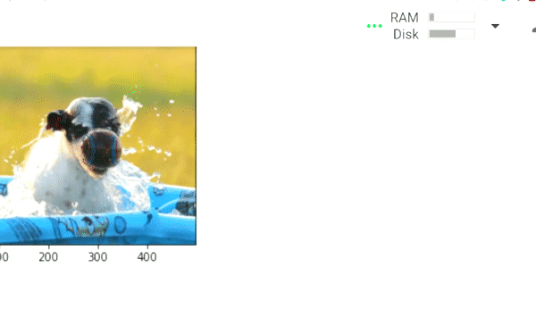
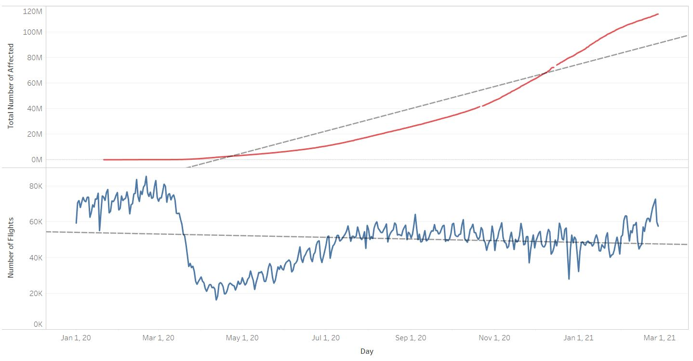
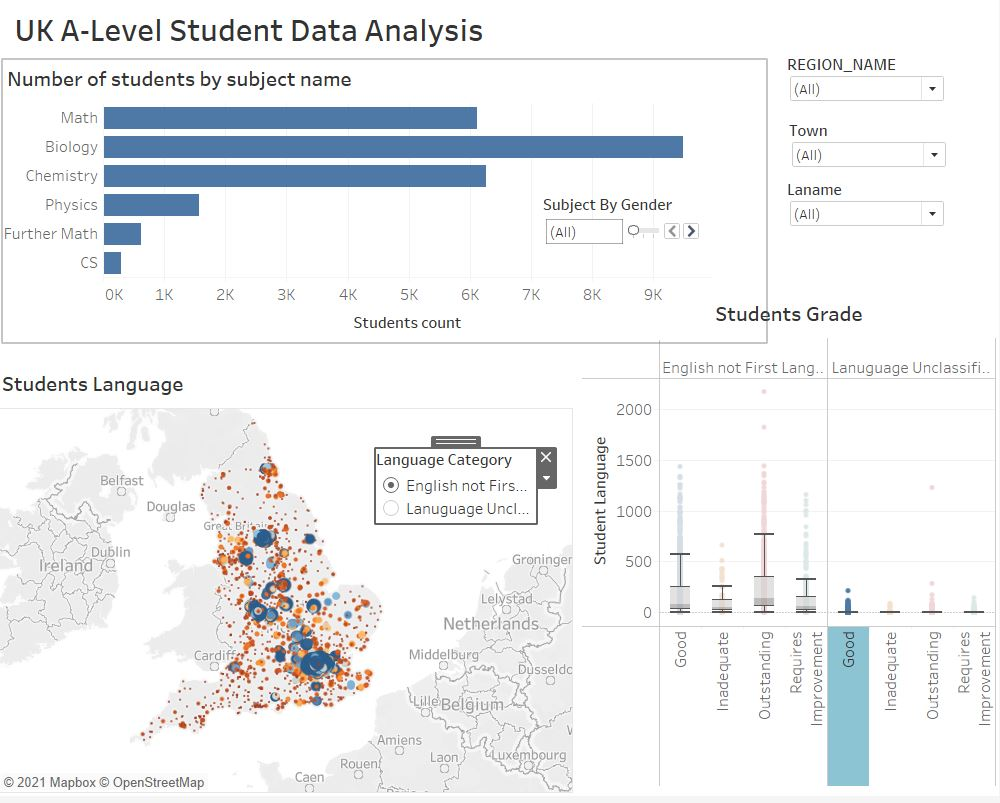
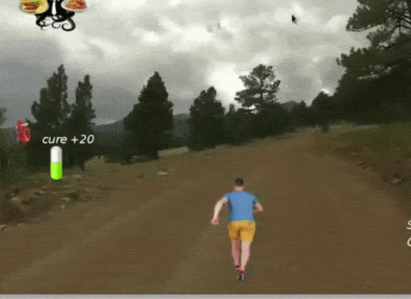

About Me
Hello! I’m Abrar Fahim. I am a data Scientist (KTP Associate) at Brunel University London and Advanced Logic Analytics. I have a masters degree in Data Science and Analytics and a solid background in Computer Science. I love finding insights from data and develop practical applications.
Education
Msc in Data Science and Analytics
Bsc in Computer Science and Engineering
Email
fahimabrar0@gmail.com
Location
United Kingdom
Professional Skills
Data Science
Natural Language Processing
Deep Learning
Python
Tensorflow
Statistics
Work Experience
+ Data Scientist at Brunel University London and Advanced Logic Analytics
Dec, 2021 - Present
Knowledge Transfer Partnership between Brunel University London and Advanced Logic Analytics
Computer Vision Intern at CityMaas
June, 2021 - Sept, 2021
Captioning Image for disabled people - using deep learning
Reviewed state of the art of the image captioning domain | Used transfer learning to extract the features from the images | Pre-trained embeddings for text data preparations | Generated six models based on CNNs and RNNs
Some captions generated by the best model are shown below,
Reviewed state of the art of the image captioning domain | Used transfer learning to extract the features from the images | Pre-trained embeddings for text data preparations | Generated six models based on CNNs and RNNs
Some captions generated by the best model are shown below,

Machine Learning Engineer at Codephilics
July, 2019 - Jan, 2020
Celebrity Face Detector using CNN | Web Scrapping for Restaurant Data | Analyzed Sensor Data From Gaming Equipements
Research and Projects
Artificial Neural Network and Machine Learning Based Methods for Population Estimation of Rohingya Refugees Comparing Data-Driven and Satellite Image-Driven Approaches
2019
- The data provided by NGOs, and satellite data from the google earth engine
- Compared between Machine learning and Neural Net based methods for predicting population
- Published the work in the form of an article in a renowned journal.
- Compared between Machine learning and Neural Net based methods for predicting population
- Published the work in the form of an article in a renowned journal.
Find the full article here
Airplane Demand-Drop During Covid , using crowdsourced data
2021

Applied Mapreduce, Python Dask, Piglatin for batch processing (1.6M instances) | Found the relationship of passenger movement and spread of Covid | Visualized the final output with Tableau and PowerBI
Find the full project here
Automatic Number Plate Recognition System for Bengali Style NumberPlate industry academia colaboration project
2019
- Extracted the number plate from the car image using the YOLO algorithm.
- Segmented each character and fed into CNN for classification.
- Developed a webpage using Django.
- The model can Recognize Number Plates with ~80 percent accuracy
- Segmented each character and fed into CNN for classification.
- Developed a webpage using Django.
- The model can Recognize Number Plates with ~80 percent accuracy
Visualizing A-level School Data , using the UK government data
2021

- Collected data from the UK government’s website
- Applied DBSCAN clustering to see similar schools.
- Analyzed the diversity of schools in terms of language and locations.
- Figured out the popular subject choice among males and females students.
- Visualized the data with Tableau and PowerBI.
- Applied DBSCAN clustering to see similar schools.
- Analyzed the diversity of schools in terms of language and locations.
- Figured out the popular subject choice among males and females students.
- Visualized the data with Tableau and PowerBI.
Find the full project here
Predicting Rating from Food Recipe data, using big data
2021
- Analyzed sentiment from customer reviews to understand the customer’s choice.
- Applied PCA for feature extraction, and different regression algorithms for predictions
- MSE was 0.27
- Applied PCA for feature extraction, and different regression algorithms for predictions
- MSE was 0.27
Find the full project here
Master Dataset for Understanding Pandemic , using heterogeneous big data
2020
- Collected and merge data from different sources (e.g. Microsoft Bing Covid data, Airplane movement data, Word Bank data)
- Cleaned and merged data based on a primary key (date)
- Created a master dataset for further analysis.
- Cleaned and merged data based on a primary key (date)
- Created a master dataset for further analysis.
Find the full project here
Web Scrapping of Restaurant data , freelance project
2019
- Scrapped Restaurant name, phone number, open/close hours from several websites
- Used proxy servers, random times for each Scarpe to avoid being blocked by the websites
- Developed a webpage along with “search by region” properties using Flask.
- Used proxy servers, random times for each Scarpe to avoid being blocked by the websites
- Developed a webpage along with “search by region” properties using Flask.
Spam Classification Using Machine Learning and Deep Learning, using deep learning
2021
There are several spam filters for email services, but a cellphone can be get hacked by a small short message. This project is all about identifieng spam in short cell phone messages. Used Machine Learning and Deep Learning based architectures for devloping the model and compared between them.
- Cleaned and Tokenized the data- Used TFIDF vectorization and Word Embeddings techniques
- Used both Machine Learning and Deep learning based methods for classification
- The highest accuracy obtained is 98%
Find the full project here
Java Game , undergrad course project
2015

Java game for Undergraduate Java course. A game where a running player has to ignore eating junk food found on the running path. The more avoiding junk food, the more score will be added.
Find the full project here